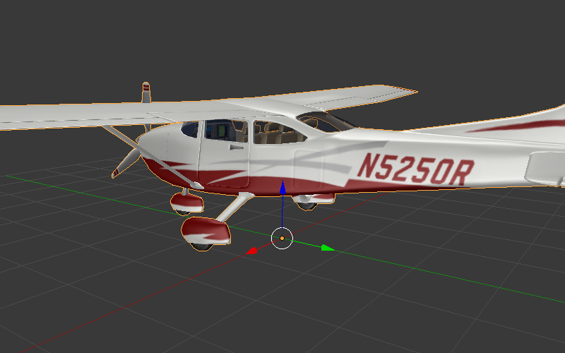

Objects¶
Objects are intended to position components of different types (meshes, cameras, lamps etc) in a 3D scene space.
Types¶
The engine supports objects of the following types:
mesh
camera
lamp
empty
armature
speaker
curve
text
metaball
surface
Static and Dynamic Objects¶
All MESH objects can be divided into static and dynamic objects.
Static objects are objects, the meshes of which can be merged together if they have the same material.
Dynamic objects are objects, the meshes of which cannot be combined with each other.
Merging of static objects - so called batching - is performed automatically when the scene is loaded in order to optimize the number of draw calls. The conversion is performed even if there is just one object in the scene. The center of the resulting mesh is located in the origin.
Among objects of the other type the dynamic ones are CAMERA and ARMATURE. All other objects are static.
The objects which have animation, physics or a parent, which is a dynamic object, are considered dynamic.
Object movement via API is possible only for dynamic objects. In order to make the movement of the object without dynamic settings possible, it is necessary to activate Blend4Web > Force Dynamic Object option in its settings.
Settings¶
The following is supported for all types of objects: transform, data reference, parent object, group membership and a set of the Blend4Web’s special properties.
Object Tab¶

- Transform > Location
Position coordinates.
- Transform > Rotation
Rotation angles. For the object rotation all available modes can be used (Rotation Mode). However only Quaternion (WXYZ) and XYZ Euler are supported for object animation.
- Transform > Scale
Scaling. All 3 components (x, y, z) should be the same. Scaling for the physics objects is not supported.
- Relations > Parent
Reference to the parent object.
- Groups
Objects’ groups to which this object belongs.
- Blend4Web > Do Not Export
Do not export this object.
- Blend4Web > Apply Scale
Apply the object’s scale upon export.
- Blend4Web > Apply Modifiers
Apply the object’s modifiers upon export. If the SKIN modifier is used we recommend to apply it before the export because it resets vertex color and UV layers which may result in errors.
- Blend4Web > Export Vertex Animation
Export previously created and saved vertex animation. Applicable for MESH objects only.
- Blend4Web > Export Shape Keys
Export shape keys. Applicable to MESH objects only.
- Blend4Web > Export Edited Normals
Export previously edited and saved normals. Applicable to MESH objects only.
Note
The following properties are mutually exclusive: Apply Scale, Apply Modifiers, Export Vertex Animation, Export Edited Normals and Export Shape Keys.
- Blend4Web > Animation > Use Default
Upon loading into the engine start playback of the animation assigned to the object.
- Blend4Web > Animation > Animation blending
Only for armature objects. Allows blending between skeletal animations.
- Blend4Web > Animation > Behavior
Animation behavior when the last frame is reached: Finish Stop - stop, Finish Reset - stop and go to the zero frame, Loop - repeat forever.
- Blend4Web > Do Not Batch
Force the object to become a dynamic object.
- Blend4Web > Force Dynamic Geometry
Allow overriding of the object’s geometry through Blend4Web API.
- Blend4Web > Disable Frustum Culling
Disable frustum culling optimization.
- Blend4Web > Disable Fogging
Disable fog for the object.
- Blend4Web > Do Not Render
Disable object rendering (for example useful for a physics object).
- Blend4Web > Shadows: Cast
The object will cast shadows.
- Blend4Web > Shadows: Cast Only
The object will cast shadows but will remain invisible itself. Becomes available after enabling Blend4Web > Shadows: Cast.
- Blend4Web > Shadows: Receive
The object will receive shadows from other adjacent objects.
- Blend4Web > Reflections: Reflexible
When enabled the object is reflected in the dynamic mirror surfaces.
- Blend4Web > Reflections: Reflexible only
The object will be reflected but will remain invisible itself. Becomes available after enabling Blend4Web > Reflections: Reflexible.
- Blend4Web > Reflections: Reflective
When enabled the object surface reflects other objects.
- Blend4Web > Reflections: Reflection Plane
Text field for the name of the empty object defining the reflection plane. Becomes available after enabling Blend4Web > Reflections: Reflective.
- Blend4Web > Caustics
The object will render caustics effects from the adjacent water.
- Blend4Web > Wind Bending
Enable procedural animation under the influence of wind.
- Blend4Web > Selectable
Enable object selection with the mouse or another input device.
- Blend4Web > Enable Outlining
Enable outline glow for the object.
- Blend4Web > Billboard
Use the object as a billboard (i.e. automatically orient relative to the camera).
- Blend4Web > Preserve Global Orientation and Scale
Take into account the rotation and scale of the billboard object. The object will be directed toward the camera with its side that is visible along Y axis in Blender. Becomes available after enabling the Blend4Web > Billboard checkbox.
- Blend4Web > Billboard Type
Billboard orientation mode. Spherical (by default) - the object is always oriented with one side to the camera, regardless of the view angle, Cylindrical - similar to Spherical, but the rotation is limited by the Blender’s world Z axis. Becomes available after enabling Blend4Web > Billboard.
- Blend4Web > LOD Transition Ratio
Parameter for smoothing the switching between the LOD objects. It defines the additional distance at which the LOD objects are still rendered before getting replaced by the next LOD objects. Assigned for the main object. Measured in fractions of the object’s bounding sphere radius.
- Blend4Web > Enable Meta Tags
Interface for adding meta tags to the object:
- Blend4Web > Tags > Title
Object’s title.
- Blend4Web > Tags > Category
Object’s category.
- Blend4Web > Tags > Description
Description for the object. Depending on Description Source, this field accepts either description text itself, or the name of a file where this description is contained.
- Blend4Web > Tags > Description Source
Source type for the description: text or text file.
- Blend4Web > Anchor > Enable Anchor
Available for EMPTY objects only. Interface for adding anchors (2D tags) to objects:
- Blend4Web > Anchor > Type
Anchor type. Annotation - the content is obtained from the meta tags assigned to the object and displayed in a collapsible window of standard design. Custom Element - arbitrary HTML element from the current web page is used as anchor. Generic - anchor’s position can be detected using anchors module API.
- Blend4Web > Anchor > Detect Visibility
Detect whether the anchor object is overlapped by other objects. Turning this option on decreases performance and should be used only when necessary.
- Blend4Web > Anchor > Max Width
Applicable to annotation anchors. This limits the expanding info window by a predefined value (measured in CSS pixels).
Physics Tab (Blender Game Mode)¶
{kind=link}
- Blend4Web > Detect Collisions
Activate the object’s physics.
- Blend4Web > Floating
Make the object floating. The settings for floating objects are described in detail in the physics section.
- Blend4Web > Vehicle
Use the object as part of a vehicle. The vehicle settings are described in detail in the physics section.
- Blend4Web > Character
Use the object for character physics. The character settings are described in detail in the physics section.
Object Transform API¶
Note
Make sure that the object you are trying to transform is a dynamic object.
Use the following methods of the transform module to move objects in the engine:
- get_translation
Get the coordinates of the object’s center. The option with a single argument returns a new vector (non-optimized option) while the option with two arguments requires an additional vector to write the result down.
- get_rotation
Get the object’s rotation quaternion. There are two ways of calling this function similar to get_translation.
- get_scale
Get the object’s scale.
- set_translation, set_translation_v
Move the object’s center into the specified location. The first function takes separate coordinates as arguments while the second one takes a three-component vector (Array or Float32Array).
- set_rotation, set_rotation_v
Set the object’s rotation quaternion. The first function takes separate coordinates as arguments while the second one takes a four-component vector (Array or Float32Array).
- set_scale
Set the object’s scale. One corresponds to the object’s original state. Values less than one mean scaling down, more than one - scaling up. Note that not all objects can be scaled. Particularly scaling is not allowed for physics objects.
- set_rotation_euler, set_rotation_euler_v
Set the object’s rotation using Euler angles. An intrinsic YZX rotation system is used (that means the angles follow in the YZX order and the origin of coordinates rotates and takes up a new position for every angle).
Quaternions¶
Quaternion is a four-component vector used to perform rotating. Quaternions have a number of advantages over other rotation methods such as:
A quaternion isn’t ambiguant and doesn’t depend on the rotation order as the Euler angles.
Quaternion’s memory usage is more effective (2-4 times less depending on the matrix used).
Better computing efficiency than for matrices in case of a series of rotations.
Numeric stability - compensation for multiplication errors arising from float number inaccuracy.
Convenient interpolation method.
- Quaternions have some drawbacks:
Rotating a vector with a quaternion is more computationally expensive than rotating with a matrix.
It is difficult to use quaternions for non-rotation transformations (such as perspective or orthogonal projection).
The engine has a number of functions to make it more convenient to work with quaternions:
- quat.multiply
Quaternion multiplication. Note that left-multiplying A quaternion by B quaternion A*B is a rotation by A. I.e. the object already has some rotation B which we supplement with a new rotation by A.
- quat.setAxisAngle
A quaternion is an alternative presentation of rotation by an arbitrary angle relative to the arbitrary axis (vector). Positive direction of rotation is defined as anticlockwise when viewing from the vector’s end. For example the quat.setAxisAngle([1, 0, 0], Math.PI/2, quat) call forms a quaternion which can be used for rotating the object by 90 degrees (anticlockwise if viewing from the X axis’ end) relative to the X axis.
- quat.slerp
Spherical interpolation of quaternions. Used for smoothing the object’s rotation and animation.
- util.euler_to_quat, util.quat_to_euler.
Сonversion from Euler angles and back.
Quaternion Example¶
We need to rotate the object by 60 degrees in a horizontal plane to the right. We have a model named “Cessna” in Blender.
{kind=link}
Lets save a reference to the object in the aircraft variable:
var aircraft = m_scenes.get_object_by_name("Cessna");
Lets rotate it:
The orientation of coordinate axes is different in Blender and in the engine. Upon export there will be a transformation [X Y Z] (Blender) -> [X -Z Y] (the engine). Therefore we need to rotate the object relative to the Y axis and not the Z axis.
A clockwise rotation corresponds to the rotation to the right (i.e. in the negative direction).
60 degrees = \(\pi/3\) radians.
As a result we get:
// compose quaternion
var quat_60_Y_neg = m_quat.setAxisAngle([0, 1, 0], -Math.PI/3, m_quat.create());
// get old rotation
var quat_old = m_transform.get_rotation(aircraft);
// left multiply: quat60_Y_neg * quat_old
var quat_new = m_quat.multiply(quat_60_Y_neg, quat_old, m_quat.create());
// set new rotation
m_transform.set_rotation_v(aircraft, quat_new);
The optimized version which does not create new objects:
// cache arrays as global vars
var AXIS_Y = new Float32Array([0, 1, 0])
var quat_tmp = new Float32Array(4);
var quat_tmp2 = new Float32Array(4);
...
// rotate
m_quat.setAxisAngle(AXIS_Y, -Math.PI/3, quat_tmp);
m_transform.get_rotation(aircraft, quat_tmp2);
m_quat.multiply(quat_tmp, quat_tmp2, quat_tmp);
m_transform.set_rotation_v(aircraft, quat_tmp);
Moving via TSR Vectors¶
It is sometimes convenient to move objects using vectors of the following format:
\([T_x, T_y, T_z, S, R_x, R_y, R_z, R_w]\)
Here \(T_x, T_y, T_z\) - the components of the translation vector, \(S\) - scale factor, \(R_x, R_y, R_z, R_w\) - the components of the quaternion vector. Hence the name of this vector: TSR or TSR-8.
This vector can be operated via tsr module, as well as via set_tsr()/get_tsr() methods of the transform module.
Copying Objects (Instancing)¶
It is often required to copy (to make instances of) objects during application work.
- Copying objects has its limitations:
only MESH objects can be copied
the object should be dynamic
the source object should belong to the active scene
Making a Simple Copy¶
In case of simple copying the new object will share the mesh with the original object. Thus, if the the original object’s mesh is changed, the copied object’s mesh will be changed too. To make simple copying possible, it’s enough to turn on the Blend4Web > Force Dynamic Object setting in the source object’s properties.
Making a Deep Copy¶
In case of deep copying the new object will have unique properties, namely it will have its own mesh. Thus, if the the original object’s mesh is changed, the copied object’s mesh will not be changed. To make deep copying possible, it’s enough to turn on the Blend4Web > Force Dynamic Geometry setting in the source object’s properties.
Сopying objects in runtime can be performed with the copy method of the objects.js module. This method requires three arguments: the id of the source object, a unique name for the new object and the boolean value to specify the copy mode (i.e. simple or deep). By default simple copying will be performed.
The newly created object should be added to the scene. This can be performed with the append_object method of the scenes.js module. The new object should be passed to it as an argument.
// ...
var new_obj = m_objects.copy(obj, "New_name", true);
m_scenes.append_object(new_obj);
m_transform.set_translation(new_obj, 2, 0, 2);
// ...
Removing Objects¶
To remove instanced objects, use the remove_object method of the scenes.js module. Pass the object to it as an argument. Only copied objects can be removed this way.
// ...
m_objects.remove_object(new_obj);
// ...
Object Selection¶
In order to enable selection of a certain object, it is required to enable the Selectable flag under the Object > Blend4Web panel.
Note
Make sure that the Scene > Blend4Web panel’s Enable Object Select property is set to YES or AUTO.
Object selection is possible programmatically via API, for example, in the scenes.js module there is the pick_object function which selects an object based on canvas 2D coordinates,
// ...
var x = event.clientX;
var y = event.clientY;
var obj = m_scenes.pick_object(x, y);
// ...
or using the NLA Script.
If the selectable object has active Enable Outlining and Outline on Select flags under the Object > Blend4Web panel, then the pick_object function call will activate outline glow animation.
Morphing¶
Morph targets can be added using Blender’s standard Mesh > Shape keys interface.

The engine supports all shape key options under the “Relative” type.
To set a shape key value, use the apply_shape_key method of the geometry.js module.
Note
The object must have Export Shape Keys enabled.
// ...
var obj = m_scenes.get_object_by_name("Object");
m_geometry.apply_shape_key(obj, "Key 1", 0.5);
// ...